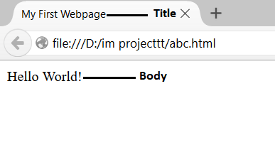

Basic Tags
HTML code is most commonly referred to as tags. The majority of tags have both an opening tag and a corresponding closing tag. Every HTML file begins with this opening tag:
<html>
Every HTML file ends with the corresponding closing tag:
</html>
Notice the / in the closing tag? All closing tags must have this slash. You know why? Because it's a closing tag, that's why. Below the opening html tag come the opening and closing head tags:
<head> </head>
The head tag doesn't have any affect on what appears on the web page, it's job is to hold certain other types of tags, one being the title tag:
<title>My First Webpage</title>
Now, this is what the code should look like so far
<html>
<head>
<title>My First Webpage</title>
</head>
Now let's get to putting something on the webpage. Everything that is seen on web pages is found between the opening and closing body tags:
<html>
<head>
<title>My First Webpage</title>
</head>
<body>
Hello World!
</body>
</html>
Notice in the example that the closing html tag was added to the code. This means we are finish, so save your code. Now it would appear like the image given below:

Designed by Kashish Gupta, Hargun Singh, Karan Verma.